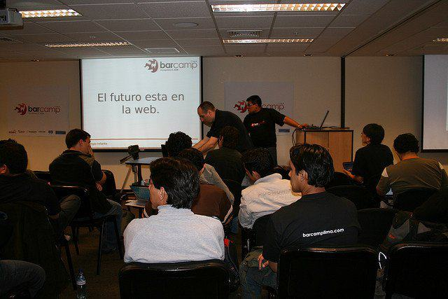

BarCamp Lima 5
Webmakers: Constructores de la Web
24 de marzo de 2012, desde las 9:30am
Universidad Tecnológica del Perú


Plan de Auspiciadores
BarCamp Lima es desde 2008 el espacio de diálogo y aprendizaje en la ciudad de Lima que reúne a especialistas en tecnologías web.
Ediciones anteriores:
- BarCamp Lima 1: 8 de noviembre de 2008 (HP)
- BarCamp Lima 2: 28 de marzo de 2009 (Compu Palace)
- BarCamp Lima 3: 11 de diciembre de 2010 (HP)
- BarCamp Lima 4: 6 de agosto de 2011 (Hotel Britania)
También puede ver algunas fotos [1] [2] y videos [3] [4] de las ediciones anteriores.
Formas de auspicio
Dinero en efectivo o entrega a los asistentes de algunos de estos items:
- Regalos para sortear. Deseables: Stickers/Tazas/Polos con el logo de BarCamp y del auspiciador
- Bocaditos y gaseosa
- Comida (léase pizzas :D)
Beneficios
Al convertirse en auspiciador del BarCamp Lima tendrá derecho a:
- Logo en la página principal y Facebook de BarCamp Lima (publicados en orden de llegada)
- Presentación de la empresa por parte de un representante de 1 minuto durante la apertura
- Menciones de agradecimiento en la apertura y cierre por parte de los organizadores
- Colocar un banner de la empresa al lado de la zona de ponencias
- Presentación de la empresa por parte de un representante de 1 minuto durante la apertura
- Coordinación para que el proveedor de comida entregue factura a nombre del sponsor (en el caso de que se entregue dinero en efectivo)
¿Interesado?
Entonces completa este formulario y nos contactaremos contigo.